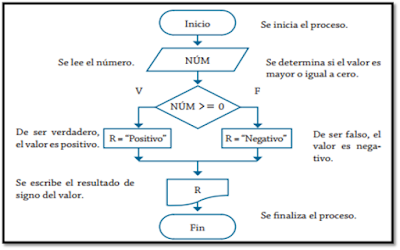

Programación
Programación.
Es el proceso de tomar un algoritmo y codificarlo en una notación, un lenguaje de programación, de modo que pueda ser ejecutado por una computadora. Aunque existen muchos lenguajes de programación y muchos tipos diferentes de computadoras, el primer paso es la necesidad de tener una solución. Sin un algoritmo no puede haber un programa. Las ciencias de la programación no son el estudio de la programación. La programación, sin embargo, es una parte importante de lo que hace un científico de la computación. La programación es a menudo la manera en la que creamos una representación para nuestras soluciones. Por tanto, esta representación en un lenguaje y el proceso de crearla se convierte en una parte fundamental de la disciplina. Los algoritmos describen la solución a un problema en términos de los datos requeridos para representar el caso del problema y el conjunto de pasos necesarios para producir el resultado pretendido. Los lenguajes de programación deben suministrar un modo notacional para representar tanto el proceso como los datos. Para este fin, los lenguajes suministran estructuras de control y tipos de datos. Las estructuras de control permiten que los pasos algorítmicos sean representados de una manera conveniente pero sin ambigüedades. Como mínimo, los algoritmos requieren estructuras que lleven a cabo procesamiento secuencial, selección para toma de decisiones e iteraciones para control repetitivo. Siempre y cuando el lenguaje proporcione estas instrucciones básicas, éste puede ser usado para la representación del algoritmo. Todos los ítems de datos en la computadora están representados como cadenas de dígitos binarios. Con el fin de darle significado a estas cadenas, necesitamos tener tipos de datos. Los tipos de datos brindan una interpretación para estos datos binarios de modo que podamos considerarlos en términos que tengan sentido con respecto al problema que está siendo resuelto. Estos tipos de datos incorporados de bajo nivel (a menudo denominados tipos de datos primitivos) proporcionan los bloques constructivos para el desarrollo de algoritmos. Por ejemplo, la mayoría de lenguajes de programación proporcionan un tipo de datos para los enteros. Las cadenas de dígitos binarios en la memoria de la computadora pueden interpretarse como enteros y se les dan los significados típicos que comúnmente asociamos con los enteros (e.g. 23, 654 y -19). Además, un tipo de datos también proporciona una descripción de las operaciones en las que los ítems de datos pueden participar. Con enteros, son comunes las operaciones tales como la suma, la resta y la multiplicación. Podemos dar por sentado que los tipos de datos numéricos puedan participar en estas operaciones aritméticas. La dificultad que a menudo nos surge es el hecho que los problemas y sus soluciones son muy complejos. Estas estructuras y tipos de datos simples, suministrados por el lenguaje, si bien son ciertamente suficientes para representar soluciones complejas, están típicamente en desventaja a medida que trabajamos en el proceso de solución de problemas. Requerimos maneras de controlar esta complejidad y contribuir con la creación de soluciones. Recuperado de: Click aqui
Agoritmos
En el contexto matemático, los algoritmos son una serie de normas o leyes específicas que hace posible la ejecución de actividades, cumpliendo una serie de pasos continuos que no le originen dudas a la persona que realice dicha actividad. Los algoritmos se pueden expresar de diversas formas: lenguaje natural, lenguaje de programación, pseudocódigo y diagramas de flujo. Los algoritmos se caracterizan porque: se definen de manera específica en cada paso. Su efectividad, esto significa que un sujeto puede realizar un algoritmo sin utilizar un ordenador y sus pasos son finitos. Por otra parte se pueden clasificar de la siguiente manera: Según el sistema de signos: cualitativos y cuantitativos. Los algoritmos cualitativos son aquellos que se realizan por medio de las palabras, lo que quiere decir que las órdenes vienen dadas en forma verbal. Por ejemplo una receta de cocina. Por su parte los algoritmos cuantitativos son aquellos que se realizan por medio de cálculos matemáticos. Por ejemplo, si se desea saber cuál es la raíz cuadrada de un número, se pueden aplicar algoritmos. Según su función: de ordenamiento, de búsqueda y de encaminamiento. Los algoritmos de ordenamiento son aquellos que llevan en orden los elementos que ingresan, dependiendo del orden numérico o léxico. Los algoritmos de búsqueda tratan de encontrar dentro de la lista que ingresa, algún elemento en especial que cumpla con las órdenes dadas. Y por último, los algoritmos de encaminamiento, éstos deciden la manera de cómo se tendrá quetransmitir la información que llega y cómo deben seguir los pasos establecidos. De igual manera se encuentran los algoritmos computacionales, estos se realizan mediante la utilización de un computador. Y los no computacionales que son aquellos que no requieren de un ordenador. Por ejemplo cuando se instala un equipo de video. Es importante resaltar la importancia de los algoritmos ya que representa un elemento básico para las matemáticas, la informática, la robótica, ya que a través de ellos se logra un ordenamiento de ideas. Ellos conducen a la correcta ejecución de actividades y a un orden de ideas, relacionadas con cualquier aspecto. Recuperado de: Click aqui
Diagrama de flujo
Un diagrama de flujo es la representación gráfica del flujo o secuencia de rutinasbr simples. Tiene la ventaja de indicar la secuencia del proceso en cuestión, las unidades involucradas y los responsables de su ejecución, es decir , viene a ser la representación simbólica o pictórica de un procedimiento administrativo. Luego, un diagrama de flujo es una representación gráfica que desglosa un proceso en cualquier tipo de actividad a desarrollarse tanto en empresas industriales o de servicios y en sus departamentos, secciones u áreas de su estructura organizativa. Son de gran importancia ya que ayudan a designar cualquier representación gráfica de un procedimiento o parte de este. En la actualidad los diagramas de flujo son considerados en la mayoría de las empresas como uno de los principales instrumentos en la realizacion de cualquier método o sistema A continuación se incluyen dos representación power point , del procedimiento para organizar el evento de una boda, como ejemplo practico de la utilización de los diagramas de flujo en cualquier proceso o actividad. Se trata de una muy útil herramienta para poder entender correctamente las diferentes fases de cualquier proceso y su funcionamiento , y , por tanto , permite comprenderlo y estudiarlo para tratar de mejorar sus procedimientos. Son importantes los diagramas de flujo en toda organización y departamento, ya que permite la visualización de las actividades innecesarias y verifica si la distribución del trabajo esta equilibrada, es decir, bien distribuida en las personas, sin sobre cargo para algunas mientras otros trabajan con mucha holgura. Los diagramas de flujo son importantes para el diseñador por que le ayudan en la definición, formulación, análisis y solución del problema. El diagrama de flujo ayuda al análisis a comprender el sistema de información de acuerdo con las operaciones de procedimientos incluidos, le ayudara analizar esas etapas, con el fin tanto de mejorarlas como de incrementar la existencia de sistemas de información para la administración. Recuperado de: Click aqui
